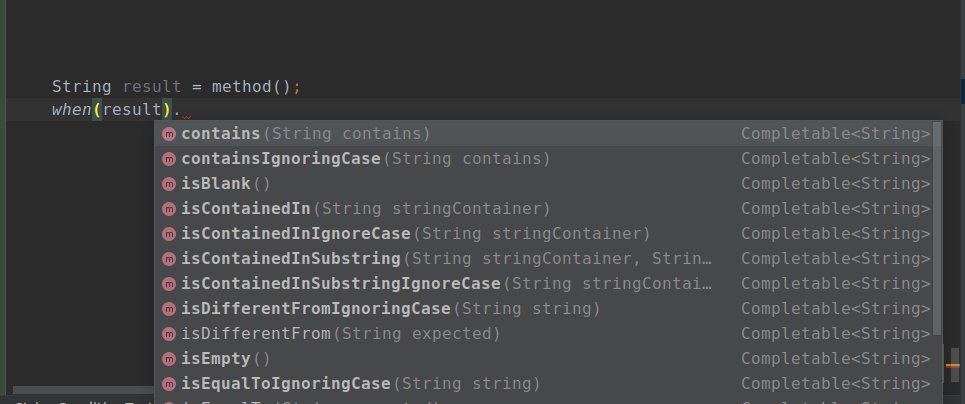

Very quick start
This guide is for the Wotif core module.
Wotif core Maven package is in its Alfa version and it is only available on github for now. To see how configure Apache Maven for use with GitHub Packages visit this page.
Get Wotif Core conditions
Add this to your pom.xml:
<dependency>
<groupId>dev.ksarou</groupId>
<artifactId>wotif-core</artifactId>
<version>0.0.1-alpha-2</version>
</dependency>
Run via command line:
mvn install
Add Wotif methods static import
Import all members at once by adding this line to your imports
import static dev.ksarou.wotif.core.Conditions.*;
Or individually if you prefer
import static dev.ksarou.wotif.core.Conditions.when;
import static dev.ksarou.wotif.core.Conditions.whenAllOf;
import static dev.ksarou.wotif.core.Conditions.whenAnyOf;
import static dev.ksarou.wotif.core.Conditions.whenNoneOf;
Use Wotif
Start type when() method (or whenAllOf(), whenAnyOf(), whenNoneOf()) and pass it as a parameter the variable you want to test, then type a dot and let your IDE help you choose from the available methods.

Here an example for a trivial case
String result = method();
when(result).isNotBlank()
.then(() -> System.out.println("This string is not blank"))
.orElse(() -> System.out.println("This string is blank"))
.end();
And here another for a more complex one
when(list_1).contains(stringToFind_1).and(when(list_1).doesNotContains(stringToFind_2))
.then(() -> {
// Instructions...
})
.orElse(when(list_2).contains(stringToFind_3).and(when(list_2).doesNotContains(stringToFind_4)), () -> {
// Instructions...
})
.orElse(() -> {
// Instructions...
});
You can also use or modify the terms you used in your condition, using methods like map or flatMap
when(integer).isNegative()
.map(i -> i * -1)
.peek(i -> System.out.println(i + " is now positive"))
.getOrElse(integer);